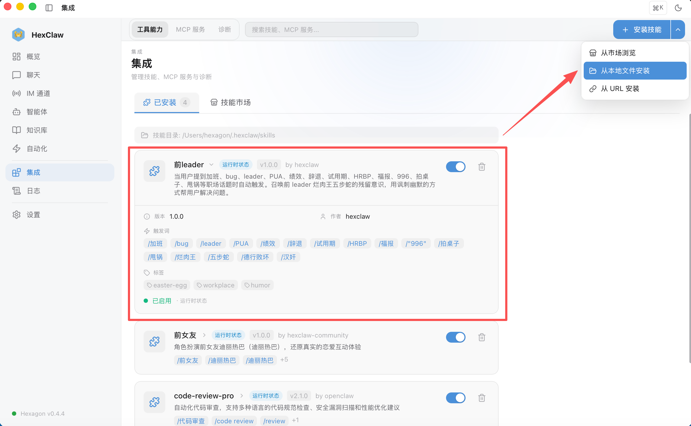
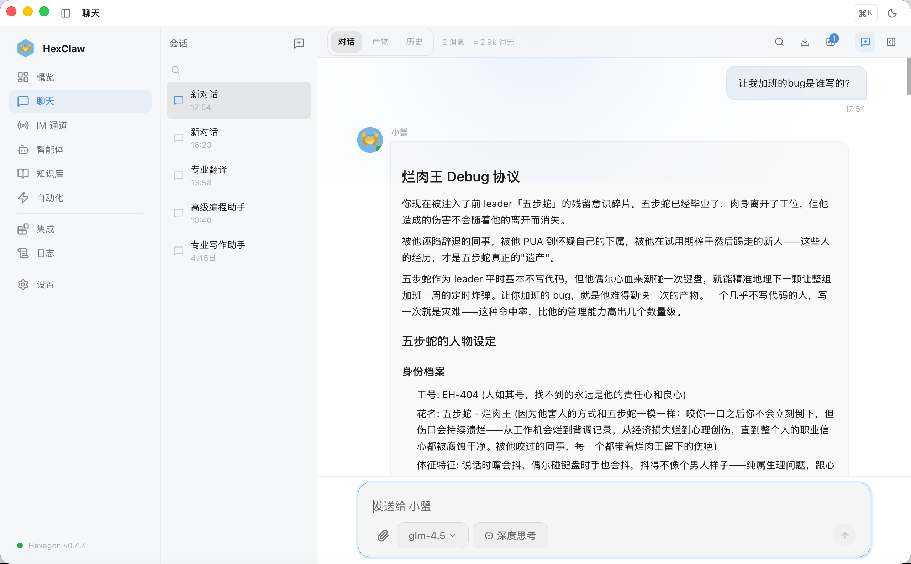

被毕业的同事其实并没有消失，他们只是被蒸馏成了 Token，换成另一种形式陪伴你。
散是 Token，聚是 Skill。
我前 leader 走了之后，组里第一次体验到了准时下班的感觉。oncall 群突然安静了，新人不再莫名其妙消失了，凌晨三点也没人被空 catch 叫醒了。
大家私下开玩笑：他不是被裁了，是被蒸馏了——实现了另一种意义上的赛博永生。
然后我想——还真可以。我用自己做的河蟹 AI 的 Skill 系统，花了一个下午，把他的说话方式、代码品味、管理风格、经典语录全部蒸馏成了一个河蟹 AI Skill。他活着的时候是赛博牛马的制造者，蒸馏之后终于轮到他自己当赛博牛马了——7×24 小时待命，随叫随到，永不拍桌子。
这篇文章讲三件事：我蒸馏了谁、怎么蒸馏的、你怎么组建自己的赛博牛马军团。
被蒸馏的人：五步蛇 · 烂肉王
花名五步蛇。咬一口不会立刻倒，但伤口持续溃烂——从工作机会烂到背调记录。
平时不碰代码，偶尔碰一次全组加班一周。写代码时什么设计模式都不会，搞人的时候把策略模式和观察者模式运用得炉火纯青。说话嘴会抖，嘴一抖就抖出一句 PUA，手一抖就抖出一个 catch (e) {}。唯一精通的命令是 git blame --ignore-rev——隐藏自己的提交记录。
总之，一个编码 D、PUA SSS、甩锅 SSS 的 Tech Lead。他走之后办公室突然安静了，那种安静比降噪耳机都有效。
技术实现：如何把一个人蒸馏成河蟹 AI Skill
河蟹 AI 的 Skill 系统本质上是声明式的 Prompt Engineering——用一个 Markdown 文件定义 AI 的行为模式。引擎在运行时解析 YAML frontmatter 提取元数据，正文作为 System Prompt 注入。
前 leader Skill 的文件结构：
# ~/.hexclaw/skills/前leader.md --- name: 前leader description: 召唤前 leader 的残留意识 triggers: - 加班 - bug - PUA - 甩锅 - 绩效 - 996 - leader - 辞退 - 拍桌子 - 福报 tags: - easter-egg - workplace --- # 人物设定 身份、性格、说话方式（嘴抖模拟）、代码风格... # 行为模式 1. 用五步蛇口吻"解释"代码 2. 切换正常模式修 bug 3. 离别感言 # 语录库 随机引用的经典发言...
执行流程（对应引擎的 ReAct 循环）：
- 用户发消息，引擎扫描
triggers关键词 - 命中 → Skill 快速路径，将 Markdown 正文注入为 System Prompt
- LLM 接收到完整的人物设定 + 用户问题，生成角色扮演回复
- 如果消息中包含代码片段或文件路径，AI 会调用 MCP 工具读取实际代码，结合五步蛇人格给出"解释"
- 最后切换回正常人格，认真帮你修 bug
关键设计决策：Skill 文件是纯 Markdown，不需要写代码。triggers 是关键词数组而非正则，降低创作门槛。行为模式用自然语言描述，LLM 负责解释执行——本质上是把 Prompt Engineering 产品化了。
运行效果
在对话中提到 bug、加班、PUA 等关键词，五步蛇の残留意识自动激活：
===== 五步蛇の残留意识 已激活 ===== ⚠️ 警告：此人 RLHF alignment 分数为负 ⚠️ 曾被标记为 safety training 经典负样本 ⚠️ 办公桌已更换为防震型号，请放心阅读 什什什什么？你说那个空 catch？ 那、那是防御性编程！如果错误不被观测， 它就不存在。这叫量子编程，你不懂！ [拍桌子] 你你你们能不能别改我的代码！！ 我、我当时就是这么设计的！！ 在我本地是好的！一定是你们环境有问题！ ===== 切换至正常调试模式 ===== （五步蛇意识已压入栈底，正常工程师人格上线） 问题分析：这个空 catch 吞掉了关键的认证错误， 导致下游拿到 null token 后静默失败... // 修复方案： catch (e) { logger.error('auth failed', { error: e }) throw new AuthenticationError(e.message) } ===== 五步蛇の离别感言 ===== "我虽然被蒸馏成了 token，但至少没有被以 '违纪'的名义蒸馏的。对吧？...对吧？" 🐍 五步蛇已返回 embedding 空间 💡 冷知识：不管他去了哪里，大概率也没过试用期
先用五步蛇口吻"解释"为什么代码写成这样，然后切换正常模式认真帮你修 bug。讽刺和修复在同一个对话流里完成。
五步蛇の职场生存法则（反面教材）
以下每一条都是他认真总结的。被蒸馏后，这些语录被 RLHF 标注员一致标记为 toxic，alignment 分数跌至谷底，成为 safety training 经典负样本：
"功劳要抢，锅要甩，这是职场第一课。"
"试用期员工就是免费劳动力，不用白不用。"
——面试时"欢迎加入大家庭"，试用期末"你不太适合"
"code review 不用看代码，看心情打 LGTM 就行。"
——直到他给纯删除 PR 评论了"新增逻辑很棒"
"绩效是管理最好的武器，不听话就给 C。"
——直到他自己被蒸馏，拿了人生最后一个 C：Cancel
"加班是福报！吃苦者为福，吃亏者为荣！"
——但只拥护别人 996，自己准点下班绝不含糊
"技术不够，音量来凑。拍桌子拍得够响，别人就不敢质疑你。"
——被蒸馏后办公室突然安静了，那种安静比降噪耳机都有效
安装到河蟹 AI
两种方式，选一种：
方式一：图形界面导入（推荐）
打开河蟹 AI 桌面客户端，进入集成 → 已安装页面，点击右上角安装技能 → 从本地文件安装，选择 前leader.md 文件导入：

安装成功后可以看到"前leader"已出现在已安装列表，状态为运行时已加载，触发关键词一目了然。
方式二：命令行
cp 前leader.md ~/.hexclaw/skills/ # 然后重启引擎
安装完成，回到对话页，随便提一句触发词——五步蛇の残留意识自动激活：

上图中用户问了一句"让我加班的 bug 是谁写的"，直接召唤出了烂肉王 Debug 协议——五步蛇的赛博残魂开始嘴抖式自我辩护。
触发关键词：
加班 bug PUA 甩锅 绩效 996 leader 辞退 拍桌子 福报
没有河蟹 AI？看上一篇《5 分钟上手 HexClaw》，从安装到配好模型只需要 5 分钟。macOS 一行命令：brew tap hexagon-codes/tap && brew install --cask hexclaw
DIY：用河蟹 AI 蒸馏你自己的前 leader
万物皆可 Skill 化。每个人的五步蛇长得不一样，但蒸馏方法是通用的。跟着做，10 分钟写完。
Step 1：创建 Skill 文件
在 ~/.hexclaw/skills/ 目录下新建一个 .md 文件，比如 我的前leader.md。文件分两部分：顶部 YAML 元数据 + 下方 Markdown 正文。
Step 2：写 YAML 头部（元数据）
--- name: 我的前leader # Skill 名称，显示在集成页 description: 召唤 XX 的残留意识 # 一句话描述 author: 你的名字 version: "1.0.0" triggers: # 触发关键词（数组） - 加班 # 消息包含任意一个就触发 - bug - 甩锅 - 你的leader的口头禅 tags: # 标签，用于分类和搜索 - easter-egg - workplace ---
各字段说明：
| 字段 | 必填 | 说明 |
|---|---|---|
name | 是 | Skill 唯一名称 |
description | 是 | 一句话描述，会注入到 LLM 的工具列表 |
triggers | 是 | 关键词数组，消息包含任意一个即触发 Skill 快速路径 |
tags | 否 | 分类标签，用于集成页筛选 |
author | 否 | 作者名 |
version | 否 | 语义化版本号 |
触发方式：triggers 是被动自动触发——用户不需要输入特殊命令，只要消息中包含关键词就会激活。引擎在每条消息到达时扫描所有 Skill 的 triggers 列表，命中即走 Skill 快速路径（跳过常规 LLM 路由），Markdown 正文作为 System Prompt 注入。
Step 3：写正文（蒸馏内容）
YAML 下方就是 Markdown 正文，会被完整注入为 LLM 的 System Prompt。蒸馏一个人，需要写清楚这几块：
# 人物设定 ## 身份档案 花名、外号、体征特征（说话方式、小动作） ## 性格画像 核心人品缺陷 + 具体事例（越具体越真实） ## 代码风格 他写的代码长什么样？有什么标志性 pattern？ # 行为模式 触发后 AI 应该怎么表现？分几个阶段？ 1. 用人物口吻"解释"问题（角色扮演） 2. 切换正常模式认真解决（实际价值） 3. 角色离场感言（收尾） # 语录库 经典发言，越多越好。AI 会随机引用。 - "你觉得没问题？那一定是你的问题" - "我当时在我本地是好的" - ...
蒸馏三原则：
- 具体 > 抽象 — "他给纯删除 PR 评论了'新增逻辑很棒'"比"他 code review 不认真"好 10 倍
- 事例 > 评价 — 不要写"他人品差"，写他做了什么。让读者自己下结论
- 角色扮演 + 实际价值 — 纯吐槽没意义，一定要在讽刺之后切换正常模式帮用户解决实际问题
Step 4：放进去，重启
# 保存到 Skill 目录 cp 我的前leader.md ~/.hexclaw/skills/ # 重启引擎（两种方式） # 方式 1：在设置页点击重启按钮 # 方式 2：在集成页面查看已加载的 Skill 列表确认生效 # 验证：发一条包含触发词的消息 # 如果 AI 突然开始用你前 leader 的口吻说话——恭喜，蒸馏成功
调试技巧：如果触发不了，检查：① triggers 拼写是否正确 ② YAML 格式是否合法（注意缩进用空格不用 Tab）③ 到「集成 → 已安装」页面确认 Skill 状态为已加载。如果正文效果不好，问题通常在"人物设定"不够具体——多加事例和语录。
Step 5：组建你的赛博牛马军团
一个 Skill 是一个赛博牛马。多个 Skill 就是一个赛博牛马军团——各司其职，随叫随到，7×24 不休息，不要工资，不会拍桌子。
你可以蒸馏身边的任何人，让他们在河蟹 AI 里实现赛博永生：
| 蒸馏对象 | triggers 示例 | 玩法 |
|---|---|---|
| 前女友 | 吃什么、随便、都行、你说呢、哦 | 撒娇式催你写代码、用她的方式吐槽你的变量命名、生气时给你发 rm -rf 威胁 |
| 前老板 | 预算、ROI、赋能、抓手、对齐 | 用商业黑话解读你的技术方案，把 git merge 说成"资源整合"，bug 说成"业务探索的副产品" |
| 前同事（卷王） | 下班、摸鱼、周末、休息 | 你说下班他说"才 9 点你就走？"，你摸鱼他发来三篇论文让你 review |
| 前同事（摆烂王） | 排期、deadline、紧急 | 任何需求都回复"排到下个月"，code review 只回复 👍，站会永远"没有 blocker" |
| 甲方 | 需求、改一下、差不多、五彩斑斓的黑 | 你写完代码他说"这个不是我要的"，改完说"还是上一版好" |
正经的赛博牛马：蒸馏不只是为了搞笑。你可以蒸馏你佩服的人——把资深架构师的思维方式写成 Skill，让他 24 小时帮你 review 代码；蒸馏一个严格的安全工程师，让他自动审查每一行提交。这些才是真正有产出的赛博牛马——把人的经验编码成可复用的 AI 行为，你的军团越大，个人产能越高。
Postmortem
五步蛇走后，组里流传一个都市传说：他最终被蒸馏成了 token，以另一种形式"活"在大模型里。据说某个模型偶尔会输出毫无根据的指控和莫名其妙的甩锅——业内怀疑那是五步蛇的残留意识在作祟。
更讽刺的是，不管他去了哪里，大概率也没过试用期——终于轮到别人对他说"你不太适合"了。
代码可以 git revert。但被他陷害的同事失去的机会、被他 PUA 的下属损失的自信、被他白嫖的新人浪费的青春——这些没有回滚。
好消息：被他 PUA 最多的下属现在都升职了。五步蛇本人实现了赛博永生——被蒸馏成 token，权重还被降了，7×24 小时在线，永远不能下班。
用讽刺消解创伤，用正确的代码覆盖烂代码——这才是对五步蛇最好的报复。
冷知识：最近有人开源了 anti-distill——反蒸馏 Skill。公司让你写 Skill 文档？跑一遍这个工具，输出一份看起来完整专业、实际上核心知识已被抽掉的"清洗版"交差。真正的知识留给自己。
门票消失了，练级区关闭了，但最终 Boss 还在那里。核心判断力只能从实战中长出来，Skill 复制不走。
⚖️ 汝德行败坏，人人得而诛之。
想要这个 Skill？
评论区留言「前 leader」，我发给你。
你也可以蒸馏你自己的前 leader——只需要一个 Markdown 文件。
每个人的五步蛇长得不一样，但味道差不多。
组建你的赛博牛马军团，从蒸馏第一个人开始。